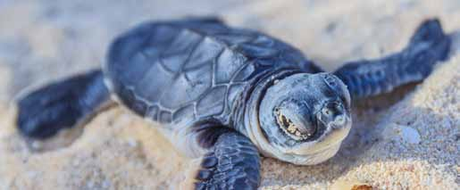

Jeg har rejst hele mit liv og husker, hvordan mine forældre for mange år siden tog min søster og mig til fjerne og eksotiske rejsemål. Derfor var det helt naturligt, da jeg selv fik børn, at de skulle med ud og opleve verden. Jeg har rejst med mine tre børn, siden de var helt små. Som regel har jeg taget dem med til Asien, Mellemøsten og andre lande, hvor forholdene er anderledes og udfordringerne større. Det er sådan, vi kan lide det, men jeg har aldrig haft behov for at være på “overlevelsestur” med mine børn. Tryghed er vigtigt Vores behov for tryghed er større, når vi rejser med vores børn. Hotelstandarden skal være lidt højere, restauranterne lidt renere, transporten lidt mere velorganiseret. Vores familierejser tager udgangspunkt i vores erfaringer med at rejse med børn. At opleve verden skaber nysgerrige børn Vi har sammensat en håndfuld rejser for børnefamilier, der prioriterer en rejse, som pirrer både børnenes og de voksnes nysgerrighed, samtidig med at rammerne er trygge og organiseret hjemmefra. Destinationerne er eksotiske, spændende, udvalgt efter sikkerhed, sol og varme og muligheden for at sammensætte varierede dagsprogrammer, som børn i forskellige aldre vil elske. En familierejse handler i høj grad om at være sammen. Men i min optik lige så meget om at få børnene til at kigge sig omkring. Give dem en forståelse for, at livet kan leves på andre måder end dem, vi er vant til. Det er en ballast, jeg som forælder er glad for at have givet mine børn. 
Vi har spurgt vores kunder, hvad de synes om vores rejser. På en skala fra 1-5, hvor 5 er det bedste, giver vores kunder os en bedømmelse på 4,8. Det er vi rigtig glade for.
Ta’ børnene med og gør jeres verden større.